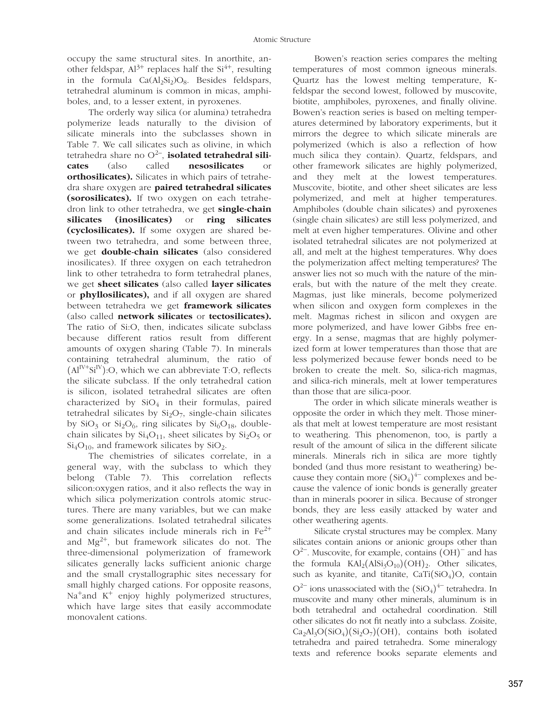
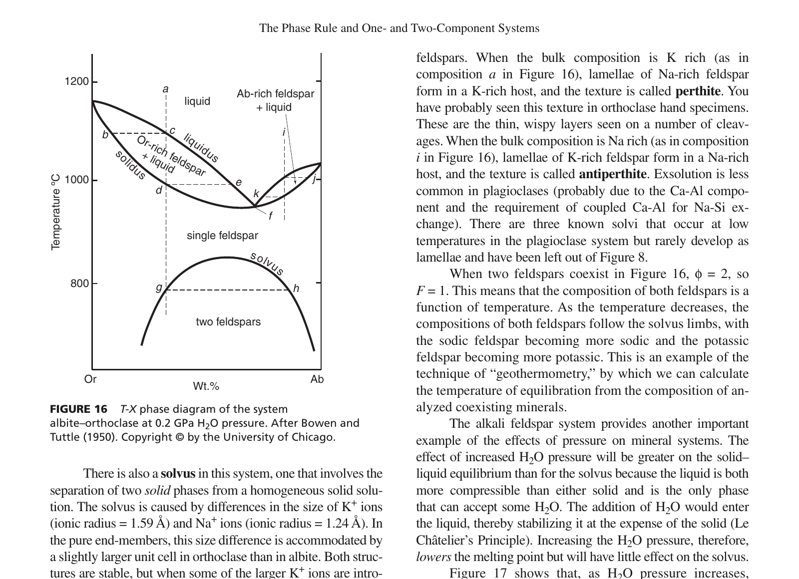
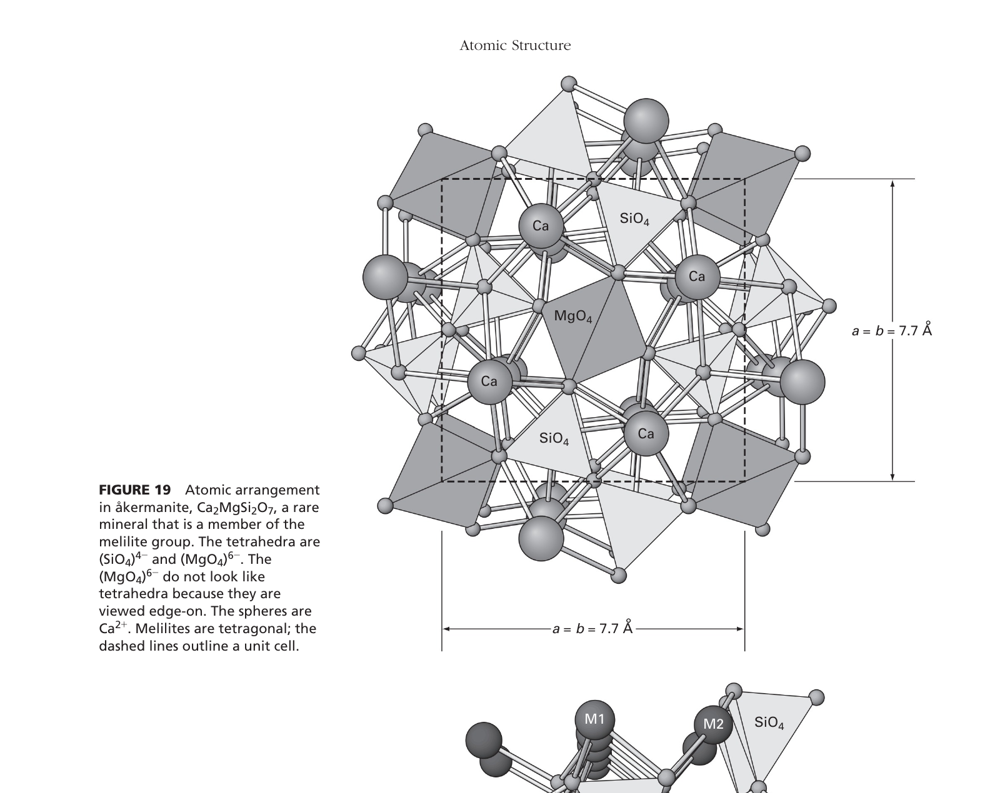
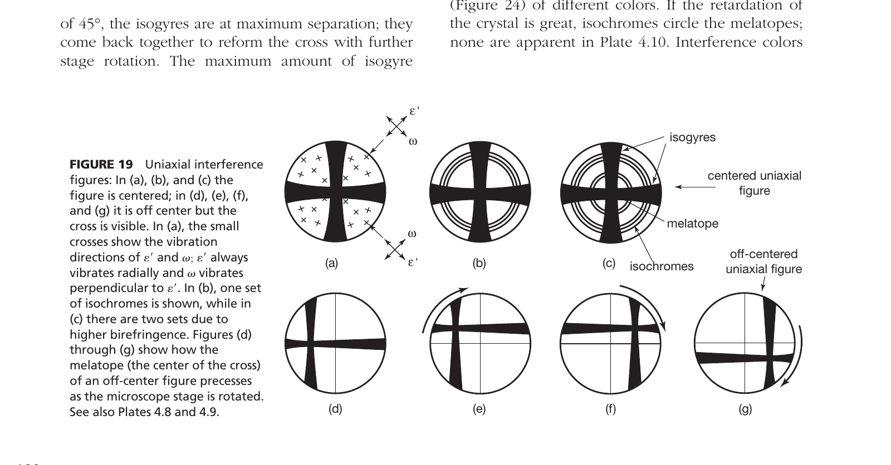

3.1 Definition and Physical Properties of Minerals
A mineral is a naturally occurring, homogeneous, inorganic solid substance having a definite chemical composition and an ordered, periodic internal atomic arrangement.
Web / Wikimedia Commons & USGS HD🔍 Click to Zoom

Figure 3.1: Euhedral Hexagonal Prismatic Quartz Crystals ($\text{SiO}_2$, $H=7$) exhibiting vitreous luster and rhombohedral terminations.
Web / Wikimedia Commons & USGS HD🔍 Click to Zoom

Figure 3.2: Optical Double Refraction (Birefringence) in rhombohedral Iceland Spar Calcite ($\text{CaCO}_3$, $H=3$, 3 perfect cleavage directions at $75^\circ$).
Dana Reference Figure🔍 Click to Zoom

Figure 3.3: Dana's Chemical Classification of Minerals based on dominant anionic groups (Native Elements, Sulfides, Oxides, Halides, Carbonates, Sulfates, Silicates).
Diagnostic Physical Properties
- Colour: Dependent on chemical composition. Idiochromatic minerals possess inherent colour due to major elements (Malachite = green, Azurite = blue). Allochromatic minerals are coloured by trace impurities (Quartz: pure = clear, rose = Ti/Mn, amethyst = Fe³⁺).
- Streak: The colour of a mineral's finely ground powder on an unglazed white porcelain streak plate. Much more reliable than bulk colour (Hematite is steel grey/black, but streak is characteristically cherry-red).
- Lustre: Appearance of a mineral surface in reflected light. Classified into Metallic (opaque, high reflectivity: Galena, Pyrite) and Non-Metallic (Vitreous like glass: Quartz; Adamantine like diamond; Resinous: Sphalerite; Pearly: Talc; Silky: Asbestos; Earthy: Kaolin).
- Hardness: The resistance of a mineral to scratching or abrasion, standardized on the Mohs Scale of Hardness (1 to 10):
Scale Mineral Formula Diagnostic Tool 1 Talc $\mathrm{Mg_3Si_4O_{10}(OH)_2}$ Scratched by fingernail (2.5) 2 Gypsum $\mathrm{CaSO_4 \cdot 2H_2O}$ Scratched by fingernail (2.5) 3 Calcite $\mathrm{CaCO_3}$ Scratched by copper coin (3.5) 4 Fluorite $\mathrm{CaF_2}$ Scratched by knife blade (5.5) 5 Apatite $\mathrm{Ca_5(PO_4)_3(F,Cl,OH)}$ Scratched by knife blade (5.5) 6 Orthoclase $\mathrm{KAlSi_3O_8}$ Scratched by steel file (6.5) 7 Quartz $\mathrm{SiO_2}$ Scratches window glass (5.5) 8 Topaz $\mathrm{Al_2SiO_4(F,OH)_2}$ Scratches quartz 9 Corundum $\mathrm{Al_2O_3}$ Scratches topaz 10 Diamond $\mathrm{C}$ Hardest natural substance - Cleavage: Tendency to split cleanly along smooth, parallel crystallographic planes of weak atomic bonding (Mica: perfect basal 1 direction; Calcite: perfect rhombohedral 3 directions at $75^\circ$; Feldspar: 2 directions at nearly $90^\circ$; Quartz: no cleavage, exhibits conchoidal fracture).
- Specific Gravity: Ratio of mineral weight to the weight of an equal volume of pure water at $4^\circ ext{C}$. Most non-metallic rock-forming silicates range from $2.6 ext{--}2.8$; metallic sulfides range from $4.5 ext{--}7.5$ (Galena = $7.5$).
3.2 Silicate Mineralogy and Crystal Chemistry
Over $95\%$ of the Earth's crust is composed of silicate minerals. The fundamental building block is the silicon-oxygen tetrahedron $[\mathrm{SiO_4}]^{4-}$, consisting of a central $\mathrm{Si}^{4+}$ cation surrounded by four $\mathrm{O}^{2-}$ anions in tetrahedral coordination.
Perkins Reference Figure🔍 Click to Zoom

Figure 3.4: Polymerization of $\text{SiO}_4^{4-}$ Tetrahedra across the Six Structural Subclasses of Silicates (Nesosilicates to Tectosilicates) (Perkins).
Perkins Reference Figure🔍 Click to Zoom

Figure 3.5: Single-Chain Inosilicate Structure of Pyroxenes ($\text{Si}:\text{O} = 1:3$, e.g., Augite) vs. Double-Chain Amphiboles ($\text{Si}:\text{O} = 4:11$, e.g., Hornblende).
Perkins Reference Figure🔍 Click to Zoom

Figure 3.6: Phyllosilicate $T\text{--}O\text{--}T$ ($2:1$) Layered Sheet Structure of Micas (Muscovite and Biotite) explaining perfect $\{001\}$ basal cleavage.
| Silicate Class | Tetrahedral Linkage | $\mathrm{Si:O}$ Ratio | Representative Minerals |
|---|---|---|---|
| Nesosilicates (Orthosilicates) | Isolated individual $[\mathrm{SiO_4}]^{4-}$ tetrahedra bonded by divalent cations ($\mathrm{Mg}^{2+}, \mathrm{Fe}^{2+}$). | $1:4$ | Olivine ($\mathrm{(Mg,Fe)_2SiO_4}$), Garnet ($\mathrm{Fe_3Al_2Si_3O_{12}}$), Zircon, Kyanite. |
| Sorosilicates | Double tetrahedra sharing one oxygen atom ($[\mathrm{Si_2O_7}]^{6-}$). | $2:7$ | Epidote ($\mathrm{Ca_2(Al,Fe)_3Si_3O_{12}(OH)}$). |
| Cyclosilicates (Ring Silicates) | Closed 3, 4, or 6-membered tetrahedral rings sharing two oxygens. | $1:3$ ($[\mathrm{Si_6O_{18}}]^{12-}$) | Beryl ($\mathrm{Be_3Al_2Si_6O_{18}}$), Tourmaline. |
| Inosilicates (Single Chain) | Continuous single chains sharing two oxygen corners. Cleavage at $\approx 87^\circ / 93^\circ$. | $1:3$ ($[\mathrm{Si_2O_6}]^{4-}$) | Pyroxene Group: Augite, Enstatite, Diopside, Hypersthene. |
| Inosilicates (Double Chain) | Double chains sharing alternating 2 and 3 oxygens. Cleavage at $\approx 56^\circ / 124^\circ$. | $4:11$ ($[\mathrm{Si_4O_{11}}]^{6-}$) | Amphibole Group: Hornblende, Tremolite, Actinolite. |
| Phyllosilicates (Sheet Silicates) | Infinite 2D planar sheets sharing 3 oxygens. Perfect basal (001) cleavage. | $2:5$ ($[\mathrm{Si_4O_{10}}]^{4-}$) | Mica Group: Muscovite, Biotite; Clay: Kaolinite, Montmorillonite; Talc, Chlorite. |
| Tectosilicates (Framework Silicates) | Complete 3D continuous framework sharing all 4 oxygens. Highly rigid structures. | $1:2$ ($\mathrm{SiO_2}$) | Quartz Group ($\mathrm{SiO_2}$); Feldspar Group (Orthoclase, Plagioclase); Zeolites. |
3.3 Visual Atlas of Rock-Forming Minerals & Silicate Structures
High-resolution mineral specimen photographs and crystallographic structural diagrams of the major rock-forming silicate groups.
Web / Wikimedia Commons & USGS HD🔍 Click to Zoom

Orthoclase Potassium Feldspar ($\text{KAlSi}_3\text{O}_8$, $H=6$) showing flesh-pink color and $90^\circ$ cleavage.
Winter Reference Figure🔍 Click to Zoom

Alkali Feldspar subsolidus exsolution phase diagram explaining Perthite and Antiperthite intergrowths (Winter).
High-Res Color Conceptual Diagram🔍 Click to Zoom

Ternary Feldspar Classification (Anorthite-Albite-Orthoclase) and plagioclase solid-solution series.
Web / Wikimedia Commons & USGS HD🔍 Click to Zoom

Muscovite Potash Mica ($\text{KAl}_2(\text{AlSi}_3\text{O}_{10})(\text{OH})_2$) displaying elastic, transparent, silvery-white folia.
Web / Wikimedia Commons & USGS HD🔍 Click to Zoom

Mineralogical plate of Nesosilicates and Cyclosilicates including rhombic dodecahedral Garnet, Olivine, Topaz, and Epidote.
Web / Wikimedia Commons & USGS HD🔍 Click to Zoom

Granular Olive-Green Olivine ($(\text{Mg,Fe})_2\text{SiO}_4$) in a mantle peridotite xenolith.
Perkins Reference Figure🔍 Click to Zoom

Double-chain tetrahedral linkage in Amphiboles ($\text{Si}_4\text{O}_{11}^{6-}$) producing $56^\circ / 124^\circ$ prism cleavage.
Perkins Reference Figure🔍 Click to Zoom

Six-membered hexagonal ring structure ($\text{Si}_6\text{O}_{18}^{12-}$) characteristic of Beryl and Tourmaline (Perkins).
Perkins Reference Figure🔍 Click to Zoom

Optical mineralogy conoscopic uniaxial interference figure (isogyre cross and isochromatic rings) under crossed polars.
Engineering Alert: Swelling Clay Minerals
Montmorillonite (Smectite group): The $2:1$ layer silicate structure has weak van der Waals interlayer bonds that readily absorb water molecules and exchangeable cations ($\mathrm{Na}^+, \mathrm{Ca}^{2+}$), causing up to $300 ext{--}500\%$ volumetric swelling. This is the mineralogical culprit behind "Black Cotton Soils" in Peninsular India, causing intense foundation heave, road buckling, and slope failures.